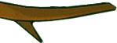
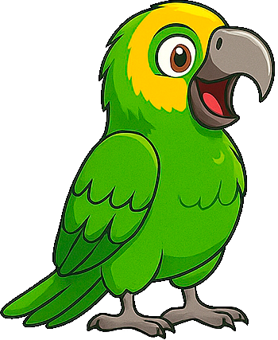
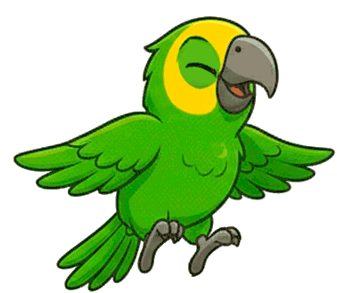
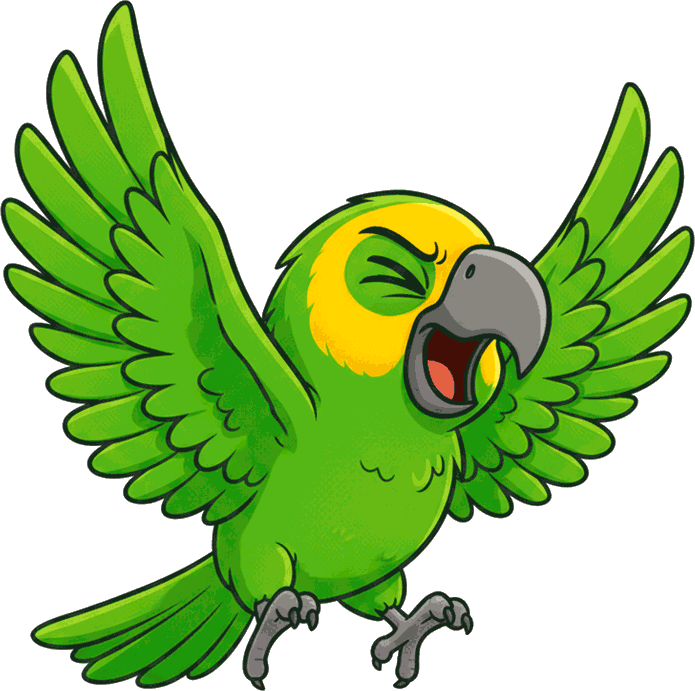
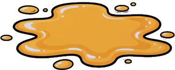

KIKO ¡a DEFECAR!
Selecciona la dificultad:
Nivel 1
Nivel 2
Nivel 3
Pulsa o toca para volar. En el aire, pulsa de nuevo para disparar.
Comenzar
Vuelo: 0 / 5
Aciertos: 0
    
Jugar de Nuevo
🔄 Por favor, gira tu dispositivo a modo horizontal para jugar